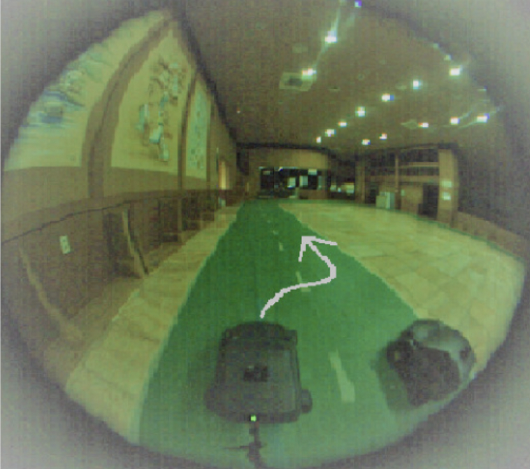
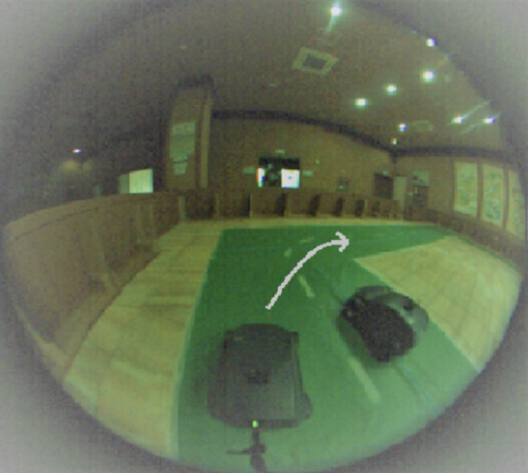

Collision Avoidance with Overtaking Maneuvers

Figure 1: two radio control (RC) cars demonstration
Introduction
With OP-CAS, we present a novel collision avoidance system for autonomous vehicles that focuses on overtaking procedures. Our algorithm selectively records the expert’s corrective driving behavior during data collection. This is performed while recording oscillatory driving behavior when the vehicle is returning to the center of the lane. This data augmentation method addresses the issue of covariate shift – of which is also commonly found in behavioral cloning methods. This approach is computationally inexpensive, thus making it a viable option for real time embedded deployment. Despite the small data subset to model the overtaking sequence, the results indicated that two expert drivers demonstrated overtaking behaviors. The overtaking maneuvers were deployed in real-time on an 1/8th scale radio control car platform, thus validating OP-CAS for civilian vehicle safety applications.
Scenarios
Our research is divided into two scenarios – of which are imitative of realistic scenarios.
Case A: Overtaking Straights
One of the vehicles performs overtaking procedures on straights. This is commonly seen in cases of road obstruction – such as swerving to avoid animals or pedestrians.
Case B: Overtaking Corners
The other vehicle overtakes the opposing vehicle (through the inside / outside lane). This is commonly seen in cases of the opposing vehicle driving slower than the other.
Check out our OP-CAS algorithm >>>